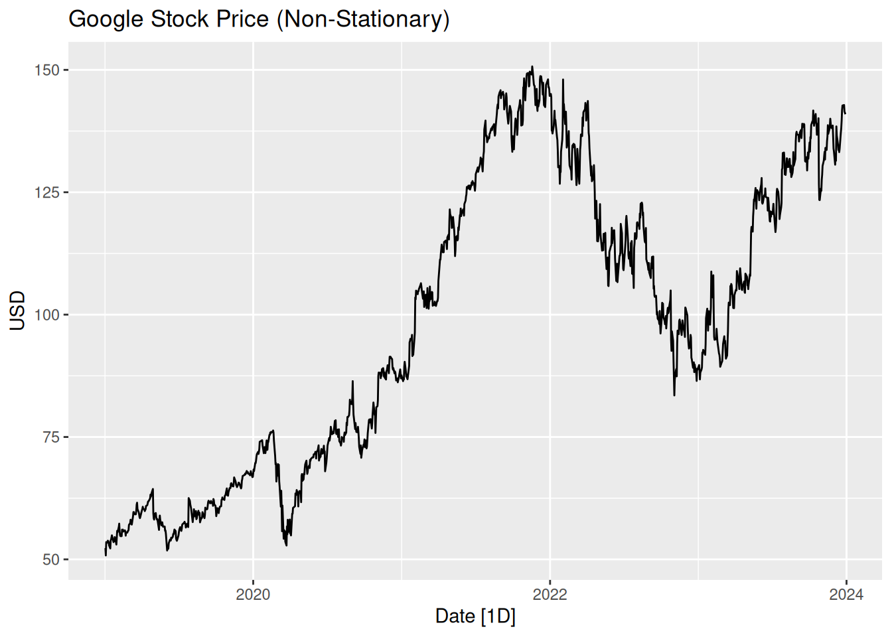

# Load data
google <- read_csv("~/Desktop/Math493Spring25ClassMaterials/data/google.csv")
google_stock <- google |>
as_tsibble() |>
mutate(LogClose = log(Close)) # Log-transform for later use
# Plot original series
google_stock |>
autoplot(Close) +
labs(title = "Google Stock Price (Non-Stationary)", y = "USD")